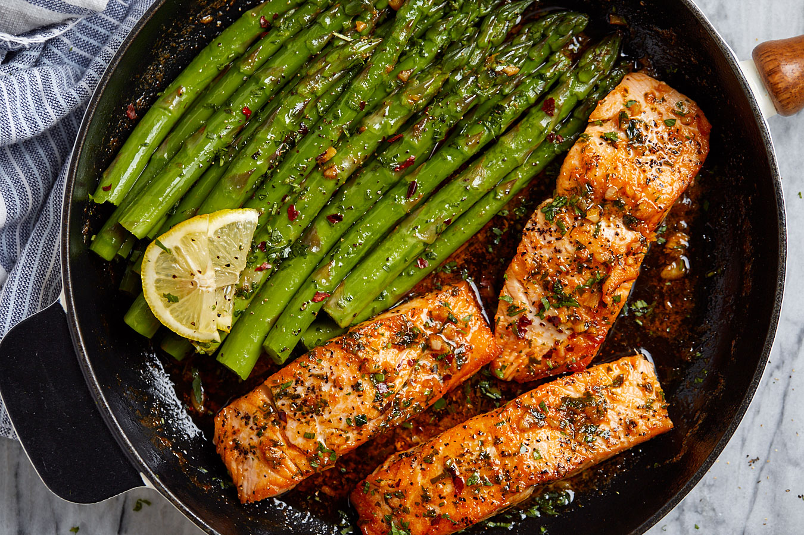

Salmon with Asparagus

Greek Sheet Pan Salmon and Asparagus
This Greek-inspired one-pan meal is simple to make and perfect for busy weeknights. Guests will love this too! Serve with a side of rice, if desired. I prefer to use thick center-cut pieces of salmon, as they tend to remain more moist.
Ingredients:
- 1 ½ pounds salmon fillet
- ½ teaspoon garlic salt
- 1 pound fresh asparagus, trimmed
- 3 tablespoons olive oil
- 2 tablespoons lemon juice
- 2 teaspoons Greek seasoning
- ¼ cup crumbled feta cheese
- 2 tablespoons Kalamata olives, pitted and finely chopped
Steps:
- Preheat oven to 400 degrees F (200 degrees C). Line a baking sheet with parchment paper.
- Cut salmon into 4 even pieces and place in the middle of the prepared sheet pan. Sprinkle with garlic salt. Scatter asparagus around salmon.
- Stir together olive oil, lemon juice, and Greek seasoning in a small bowl. Combine feta cheese and olives in a second bowl.
- Brush half the oil mixture over salmon and drizzle the remainder over the asparagus.
- Bake in the preheated oven until salmon easily flakes with a fork, 12 to 15 minutes, depending on thickness of the salmon. Sprinkle salmon with feta mixture during the last 5 minutes of cooking.
Nutrition Facts:
Per Serving: 476 calories; fat 32.6g; cholesterol 114.5mg; sodium 778.9mg; carbohydrates 6.6g; protein 38.8g.